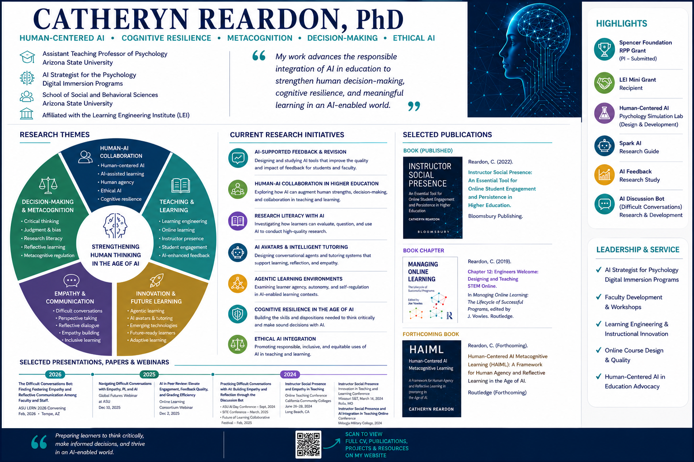

Human-Centered AI, Cognitive Resilience, Metacognition, and Decision-Making
Catheryn Reardon, PhD is an Assistant Teaching Professor of Psychology at Arizona State University and AI Strategist for the Psychology Digital Immersion Programs. Her work examines how people learn, think, and make decisions while working alongside increasingly capable artificial intelligence.
Her research and applied work focus on human-centered AI, metacognition, cognitive resilience, ethical decision-making, human-AI collaboration, instructor presence, and the design of learning environments that preserve human agency and accountability. Rather than treating AI as a replacement for human expertise, she studies how AI-supported experiences can strengthen reflection, critical thinking, judgment, and responsible decision-making.
Catheryn is also a former K–12 high school English teacher. That experience continues to shape her emphasis on writing, communication, learner-centered pedagogy, and the development of thoughtful decision-makers. With extensive experience in online teaching, instructional design, and faculty development, she has created courses, frameworks, simulations, and instructional resources that support transparent, reflective, and educationally meaningful engagement with AI.
View a one-page overview of Catheryn Reardon's research areas, publications, presentations, grants, leadership, and work in human-centered artificial intelligence.

How do we prepare people to think well in an age of increasingly capable artificial intelligence?
Catheryn's work is guided by the belief that the future of AI should not be defined only by what intelligent systems can do, but also by the human capabilities that must be preserved and strengthened alongside them.
Her research asks how educational environments, decision-support systems, and human-AI workflows can help people remain reflective, adaptable, ethical, and accountable under conditions of uncertainty. This includes examining how individuals evaluate AI-generated information, recognize cognitive and automation biases, calibrate trust, and retain meaningful responsibility for decisions made with AI support.
This perspective positions human judgment, metacognition, and cognitive resilience as essential capabilities for learning and professional practice in an increasingly AI-mediated world.
Catheryn Reardon's teaching and research sit at the intersection of psychology, learning, decision science, and artificial intelligence. She is especially interested in how AI influences confidence, revision, reasoning, trust, judgment, and the ways people understand their own thinking.
Her work draws from research on metacognition, self-regulated learning, cognitive bias, automation bias, naturalistic decision-making, instructor social presence, and ethical technology use. These foundations inform the design of learning experiences that encourage students and professionals to question, verify, reflect, and make responsible choices rather than passively defer to automated systems.
Her broader scholarly agenda explores how human-centered AI can support stronger decision quality, effective human-AI collaboration, cognitive resilience, and the continued development of human expertise.
Catheryn developed the Human-Centered AI Metacognitive Learning Model (HAIML) to guide how learners engage with AI through experiential use, metacognitive reflection, and ethical decision-making.
HAIML preserves human agency while helping learners examine how AI affects their reasoning, confidence, choices, and understanding. A central outcome of the framework is cognitive resilience: the capacity to think critically, adapt to uncertainty, evaluate AI-generated information, and maintain sound judgment while working alongside increasingly capable systems.
Her related resources include structured AI-use guidelines, faculty tools, reflective learning activities, AI-supported feedback models, and human-centered approaches to course and program design.
Catheryn's professional background spans psychology, higher education, online learning, instructional design, faculty development, and secondary English education. This interdisciplinary experience informs her emphasis on translating psychological theory into practical learning environments and professional applications.
Her earlier and ongoing scholarship on instructor social presence examines how empathy, visibility, communication, and human connection influence engagement and persistence in online learning. That work remains central to her approach to AI integration, where meaningful human presence, oversight, and responsibility must remain visible even as technologies become more sophisticated.
For research collaborations, speaking opportunities, workshops, or professional inquiries: